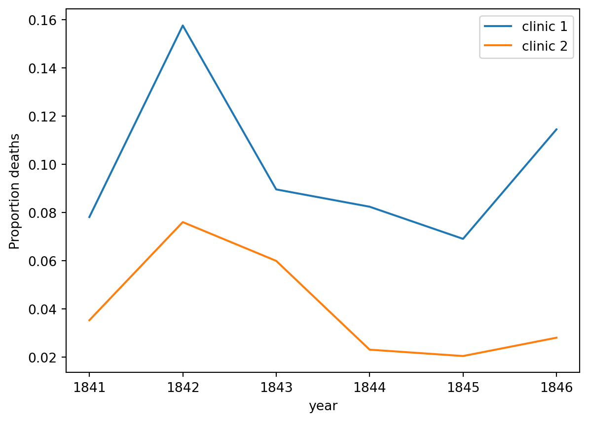
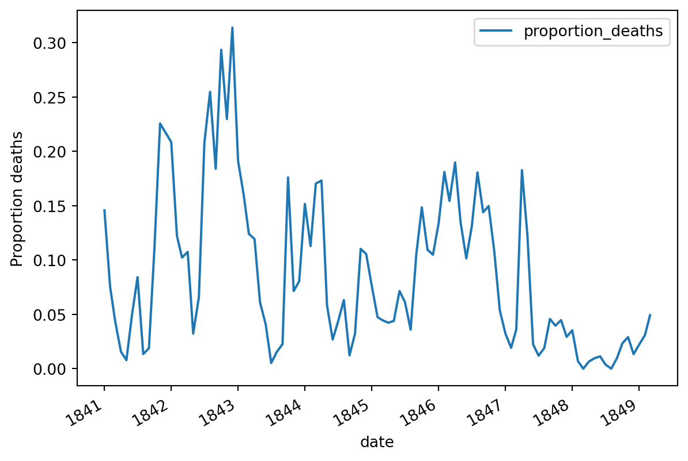
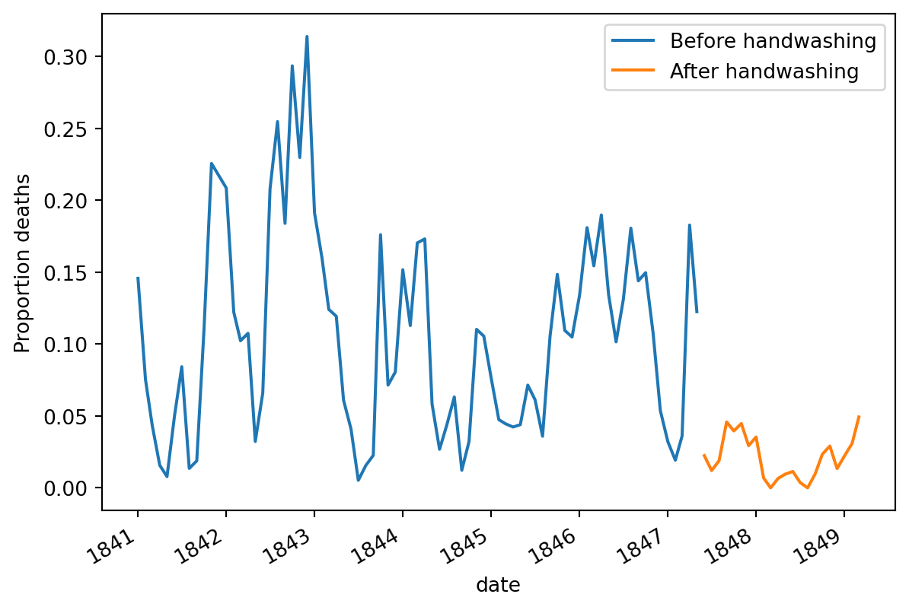

Mengetahui dan menganalisa metode cuci tangan di Rumah Sakit Umum Vienna di abad ke-19.
Analisis Data
Python
Author
Alif Dewantara
Published
February 5, 2023
Perkenalkan, ia Dr. Ignaz Semmelweis
Dr. Ignaz Semmelweis
Dokter Semmelweis lahir di Austria-Hungaria pada tahun 1818, dan aktif bekerja di Rumah Sakit Umum Vienna. Saat itu, Dr. Semmelweis menemukan adanya penyakit yang sering ditemuinya di rumah sakit: childbed fever (demam kasur), yakni penyakit yang disebabkan oleh infeksi bakteri yang menyerang saluran reproduksi perempuan setelah melahirkan atau keguguran. Ia bekerja keras mencari cara untuk mengatasi penyakit ini, sebab pada tahun 1840-an, 10% wanita yang melahirkan di Rumah Sakit Umum Vienna meninggal karena terinfeksi. Dr. Semmelweis sangat memikirkan hal ini karena ia tahu penyebab utama demam tersebut: tangan-tangan para dokter yang telah terkontaminasi saat memindahkan bayi. Sayangnya, staf rumah sakit saat itu tak ada yang mengindahkan sarannya untuk mencuci tangan!
Maka di sini, kita akan bersama-sama menganalisa kembali data yang membuat Dr. Semmelweis menemukan pentingnya mencuci tangan. Kita bisa memulainya dengan melihat data yang membuat Semmelweis menyadari bahwa ada yang salah dalam prosedur Rumah Sakit Umum Vienna.
Lihat Kode
# import modulimport pandas as pdimport matplotlib.pyplot as plt# Membaca datasets/yearly_deaths_by_clinic.csv ke dalam yearlyyearly = pd.read_csv('datasets/yearly_deaths_by_clinic.csv')# Print yearlyprint(yearly)
Tabel di atas tadi memberi informasi terkait angka para ibu yang melahirkan (births) di dua klinik (clinic) milik Rumah Sakit Vienna antara tahun 1841 sampai 1846 (year). Kalian mungkin sadar bahwa proses melahirkan di tahun tersebut sangat riskan, dan angka kematian (deaths) ibu yang melahirkan, sebagian besar terjadi akibat demam kasur.
Kita bisa lihat dengan lebih jelas jika kita melihatnya dari proporsi kematian para ibu berdasarkan angka ibu yang melahirkan (proportion_deaths). Mari kita fokus pada proporsi kematian di Klinik 1.
Lihat Kode
# Mengkalkulasi proporsi kematian per angka kelahiranyearly['proportion_deaths'] = yearly['deaths']/yearly['births']# Ekstrak data tahunan dari Klinik 1 ke dalam yearly1 dan Klinik 2 ke dalam yearly2yearly1 = yearly[yearly.clinic =='clinic 1']yearly2 = yearly[yearly.clinic =='clinic 2']# Print out yearly1print(yearly1)
Jika kita membuat memvisualisasikan proportion_deaths kedua klinik dalam line chart, kita akan melihat adanya suatu pola.
Lihat Kode
# Membuat plot proporsi kematian per tahun di kedua klinikax = yearly1.plot(x='year', y='proportion_deaths', label='clinic 1')yearly2.plot(x='year', y='proportion_deaths', label='clinic 2', ax=ax)ax.set_ylabel('Proportion deaths')plt.show()

Kampanye mencuci tangan dimulai!
Dari plot di atas pasti kalian bertanya “Mengapa ada lebih banyak kematian terjadi di klinik 1?”. Dr. Semmelweis pun melihat hal serupa dan cukup kebingungan. Padahal, perbedaan antara kedua klinik itu kelihatannya tak begitu penting: Orang yang bertugas di klinik 1 didominasi oleh mahasiswa/i kedokteran, sedangkan di klinik 2 didominasi oleh mahasiswa/i kebidanan. Perbedaan keduanya adalah jika mahasiswa/i kebidanan hanya mengurusi para ibu hamil dan melahirkan, mahasiswa/i kedokteran juga harus mengurusi ruang otopsi.
Dr. Semmelweis mulai mencurigai mayat-mayat yang ada di ruang otopsi, yang mungkin saja menjadi sumber bakteri yang tersebar melalui tangan-tangan kotor mahasiswa/i kedokteran. Dalam keadaan linglung dan pasrah karena menghadapi angka kematian yang tetap tinggi, Dr. Semmelweis pun membuat keputusan: “Cucilah tangan kalian!”.
Perlu diketahui bahwa kesadaran mencuci tangan di masa itu tidak sebaik sekarang. Perintah Dr. Semmelweis tersebut tentu saja dianggap kontroversial dan aneh. Penduduk Vienna pada masa itu juga belum tahu tentang adanya bakteri.
Nah, mari kita sekarang membuka data yang baru, yakni data bulanan dari klinik 1 untuk melihat apakah kampanye cuci tangan ini memberikan efek.
Lihat Kode
# Membaca datasets/monthly_deaths.csv ke dalam monthlymonthly = pd.read_csv('datasets/monthly_deaths.csv', parse_dates=['date'])# Hitung proporsi kematian per angka kelahiranmonthly['proportion_deaths'] = monthly['deaths']/monthly['births']# Print out lima baris awal monthlyprint(monthly.head())
Data di atas sudah berhasil dimuat, maka kita dapat melihat proporsi kematian di tahun tersebut. Dalam plot ini kita tak akan memberi tanda tentang kapan kampanye cuci tangan ini dimulai, tetapi kampanye tersebut telah mengurangi angka kematian dengan sangat signifikan sehingga kalian bisa tahu hanya dengan melihat plot di bawah.
Lihat Kode
# Membuat plot proporsi kematianax = monthly.plot(x='date', y='proportion_deaths')ax.set_ylabel('Proportion deaths')plt.show()

Proporsi kematian menurun drastis pada musim panas (Juni) 1847, yakni saat kampanye cuci tangan dimulai oleh Dr. Semmelweis
Efek mencuci tangan akan lebih terlihat jelas jika kita membuat grafik seperti ini.
Lihat Kode
# Tanggal dimulainya kampanye cuci tanganhandwashing_start = pd.to_datetime('1847-06-01')# Memisahkan monthly ke sebelum dan sesudah handwashing_startbefore_washing = monthly[monthly.date < handwashing_start]after_washing = monthly[monthly.date >= handwashing_start]# Membuat plot proporsi kematian sebelum dan sesudah mencuci tanganax = before_washing.plot(x='date', y='proportion_deaths', label='Before handwashing')after_washing.plot(x='date', y='proportion_deaths', label='After handwashing', ax=ax)ax.set_ylabel('Proportion deaths')plt.show()

Grafik di atas menunjukkan bahwa mencuci tangan memberikan efek yang luar biasa. Seluar biasa apakah cuci tangan mengurangi rata-rata proporsi kematian per bulan?
Lihat Kode
# Rata-rata perbedaan proporsi kematian saat kampanye cuci tanganbefore_proportion = before_washing.proportion_deathsafter_proportion = after_washing.proportion_deathsmean_diff = after_proportion.mean() - before_proportion.mean() print(mean_diff)
-0.08395660751183336
Analisis Bootstrap Data Cuci Tangan Semmelweis
Kampanye cuci tangan telah mengurangi angka kematian secara signifikan! Jika sebelumnya rata-rata proporsi kematian adalah 10%, kini berkurang sebanyak 8% menjadi 2%.
Agar kalian mendapatkan gambaran terkait seberapa penting mencuci tangan dalam mengurangi kematian, kita dapat membuat confidence interval.
Lihat Kode
from numpy import percentile# A bootstrap analysis of the reduction of deaths due to handwashingboot_mean_diff = []for i inrange(3000): boot_before = before_proportion.sample(frac=1, replace=True) boot_after = after_proportion.sample(frac=1, replace=True) boot_mean_diff.append(boot_after.mean() - boot_before.mean())# Calculating a 95% confidence interval from boot_mean_diff confidence_interval = percentile(boot_mean_diff, [2.5, 97.5])print(confidence_interval)
[-0.10145617 -0.06734784]
Nasib Dr. Semmelweis
Dari penjelasan di atas kita telah tahu bahwa mencuci tangan telah mengurangi proporsi angka kematian antara 6,7 sampai 10 persen, berdasarkan 95% confidence interval. Maka seharusnya Semmelweis memiliki landasan yang kuat bahwa mencuci tangan, walaupun sederhana, tetapi merupakan prosedur sangat efektif yang dapat menyelamatkan banyak orang.
Sayangnya, walaupun telah banyak bukti tersebut, teori Semmelweis yang mengatakan bahwa demam tidur disebabkan oleh suatu ‘zat’ (yang kita ketahui sekarang sebagai bakteri) dari mayat-mayat ruang otopsi, dianggap konyol oleh ilmuan saat itu. Asosiasi kesehatan saat itu sebagian besar menolak penemuan Semmelweis dan bahkan pada 1849, ia dipaksa untuk meninggalkan pekerjaaannya di Rumah Sakit Umum Vienna secara permanen.
Salah satu alasannya adalah karena pada saat itu statistika dan argumen yang berlandaskan statistika masih tidak umum di kalangan ilmu kesehatan. Semmelweis hanya mempublikasikan data mentah dalam bentuk tabel, tetapi ia tidak menunjukkan grafik atau confidence interval. Jika saja Semmelweis memiliki akses melakukan analisis seperti yang kita lakukan, ia bisa saja lebih berhasil mengampanyekan para dokter di Vienna untuk mencuci tangan.
Important
Tulisan ini adalah salah satu hasil kerja saya saat belajar dalam career path Data Scientist with Python di Datacamp.
Salam Maria, penuh rahmat, Tuhan sertamu.
Source Code
---title: "Dokter Semmelweis dan Temuan dalam Mencuci Tangan"description: | Mengetahui dan menganalisa metode cuci tangan di Rumah Sakit Umum Vienna di abad ke-19.author: "Alif Dewantara"title-block-banner: truedate: "2023-02-05"categories: - Analisis Data - Pythonimage: "Streptococcus_pyogenes.jpg"---## Perkenalkan, ia Dr. Ignaz Semmelweis[{width="435"}](https://www.google.com/url?sa=i&url=https%3A%2F%2Fwww.merdeka.com%2Fjabar%2F5-fakta-ignaz-semmelweis-pelopor-cuci-tangan-yang-selamatkan-banyak-orang-kln.html&psig=AOvVaw2Ab27GG4AbeYdWog120_Xg&ust=1675622543148000&source=images&cd=vfe&ved=0CBEQjhxqFwoTCIjAksbC_PwCFQAAAAAdAAAAABAE)Dokter Semmelweis lahir di Austria-Hungaria pada tahun 1818, dan aktif bekerja di Rumah Sakit Umum Vienna. Saat itu, Dr. Semmelweis menemukan adanya penyakit yang sering ditemuinya di rumah sakit: [*childbed fever*](https://en.wikipedia.org/wiki/Postpartum_infections) (demam kasur), yakni penyakit yang disebabkan oleh infeksi bakteri yang menyerang saluran reproduksi perempuan setelah melahirkan atau keguguran. Ia bekerja keras mencari cara untuk mengatasi penyakit ini, sebab pada tahun 1840-an, 10% wanita yang melahirkan di Rumah Sakit Umum Vienna meninggal karena terinfeksi. Dr. Semmelweis sangat memikirkan hal ini karena ia tahu penyebab utama demam tersebut: tangan-tangan para dokter yang telah terkontaminasi saat memindahkan bayi. Sayangnya, staf rumah sakit saat itu tak ada yang mengindahkan sarannya untuk mencuci tangan!Maka di sini, kita akan bersama-sama menganalisa kembali data yang membuat Dr. Semmelweis menemukan pentingnya **mencuci tangan**. Kita bisa memulainya dengan melihat data yang membuat Semmelweis menyadari bahwa ada yang salah dalam prosedur Rumah Sakit Umum Vienna.```{python}# import modulimport pandas as pdimport matplotlib.pyplot as plt# Membaca datasets/yearly_deaths_by_clinic.csv ke dalam yearlyyearly = pd.read_csv('datasets/yearly_deaths_by_clinic.csv')# Print yearlyprint(yearly)```## Proporsi angka kematianTabel di atas tadi memberi informasi terkait angka para ibu yang melahirkan (`births`) di dua klinik (`clinic`) milik Rumah Sakit Vienna antara tahun 1841 sampai 1846 (`year`). Kalian mungkin sadar bahwa proses melahirkan di tahun tersebut sangat riskan, dan angka kematian (`deaths`) ibu yang melahirkan, sebagian besar terjadi akibat demam kasur.Kita bisa lihat dengan lebih jelas jika kita melihatnya dari proporsi kematian para ibu berdasarkan angka ibu yang melahirkan (`proportion_deaths`). Mari kita fokus pada proporsi kematian di Klinik 1.```{python}# Mengkalkulasi proporsi kematian per angka kelahiranyearly['proportion_deaths'] = yearly['deaths']/yearly['births']# Ekstrak data tahunan dari Klinik 1 ke dalam yearly1 dan Klinik 2 ke dalam yearly2yearly1 = yearly[yearly.clinic =='clinic 1']yearly2 = yearly[yearly.clinic =='clinic 2']# Print out yearly1print(yearly1)```## Kematian di klinikJika kita membuat memvisualisasikan `proportion_deaths` kedua klinik dalam *line chart*, kita akan melihat adanya suatu pola.```{python}# Membuat plot proporsi kematian per tahun di kedua klinikax = yearly1.plot(x='year', y='proportion_deaths', label='clinic 1')yearly2.plot(x='year', y='proportion_deaths', label='clinic 2', ax=ax)ax.set_ylabel('Proportion deaths')plt.show()```## Kampanye mencuci tangan dimulai!Dari plot di atas pasti kalian bertanya "Mengapa ada lebih banyak kematian terjadi di klinik 1?". Dr. Semmelweis pun melihat hal serupa dan cukup kebingungan. Padahal, perbedaan antara kedua klinik itu kelihatannya tak begitu penting: Orang yang bertugas di klinik 1 didominasi oleh mahasiswa/i kedokteran, sedangkan di klinik 2 didominasi oleh mahasiswa/i kebidanan. Perbedaan keduanya adalah jika mahasiswa/i kebidanan hanya mengurusi para ibu hamil dan melahirkan, mahasiswa/i kedokteran juga harus mengurusi ruang otopsi.Dr. Semmelweis mulai mencurigai mayat-mayat yang ada di ruang otopsi, yang mungkin saja menjadi sumber bakteri yang tersebar melalui tangan-tangan kotor mahasiswa/i kedokteran. Dalam keadaan linglung dan pasrah karena menghadapi angka kematian yang tetap tinggi, Dr. Semmelweis pun membuat keputusan: "**Cucilah tangan kalian!**".Perlu diketahui bahwa kesadaran mencuci tangan di masa itu tidak sebaik sekarang. Perintah Dr. Semmelweis tersebut tentu saja dianggap kontroversial dan aneh. Penduduk Vienna pada masa itu juga belum tahu tentang adanya bakteri.Nah, mari kita sekarang membuka data yang baru, yakni data bulanan dari klinik 1 untuk melihat apakah kampanye cuci tangan ini memberikan efek.```{python}# Membaca datasets/monthly_deaths.csv ke dalam monthlymonthly = pd.read_csv('datasets/monthly_deaths.csv', parse_dates=['date'])# Hitung proporsi kematian per angka kelahiranmonthly['proportion_deaths'] = monthly['deaths']/monthly['births']# Print out lima baris awal monthlyprint(monthly.head())```## Efek mencuci tanganData di atas sudah berhasil dimuat, maka kita dapat melihat proporsi kematian di tahun tersebut. Dalam plot ini kita tak akan memberi tanda tentang kapan kampanye cuci tangan ini dimulai, tetapi kampanye tersebut telah mengurangi angka kematian dengan sangat signifikan sehingga kalian bisa tahu hanya dengan melihat plot di bawah.```{python}# Membuat plot proporsi kematianax = monthly.plot(x='date', y='proportion_deaths')ax.set_ylabel('Proportion deaths')plt.show()```Proporsi kematian menurun drastis pada musim panas (Juni) 1847, yakni saat kampanye cuci tangan dimulai oleh Dr. SemmelweisEfek mencuci tangan akan lebih terlihat jelas jika kita membuat grafik seperti ini.```{python}# Tanggal dimulainya kampanye cuci tanganhandwashing_start = pd.to_datetime('1847-06-01')# Memisahkan monthly ke sebelum dan sesudah handwashing_startbefore_washing = monthly[monthly.date < handwashing_start]after_washing = monthly[monthly.date >= handwashing_start]# Membuat plot proporsi kematian sebelum dan sesudah mencuci tanganax = before_washing.plot(x='date', y='proportion_deaths', label='Before handwashing')after_washing.plot(x='date', y='proportion_deaths', label='After handwashing', ax=ax)ax.set_ylabel('Proportion deaths')plt.show()```Grafik di atas menunjukkan bahwa mencuci tangan memberikan efek yang luar biasa. Seluar biasa apakah cuci tangan mengurangi rata-rata proporsi kematian per bulan?```{python}# Rata-rata perbedaan proporsi kematian saat kampanye cuci tanganbefore_proportion = before_washing.proportion_deathsafter_proportion = after_washing.proportion_deathsmean_diff = after_proportion.mean() - before_proportion.mean() print(mean_diff)```## Analisis Bootstrap Data Cuci Tangan SemmelweisKampanye cuci tangan telah mengurangi angka kematian secara signifikan! Jika sebelumnya rata-rata proporsi kematian adalah 10%, kini berkurang sebanyak 8% menjadi 2%.Agar kalian mendapatkan gambaran terkait seberapa penting mencuci tangan dalam mengurangi kematian, kita dapat membuat *confidence interval*.```{python}from numpy import percentile# A bootstrap analysis of the reduction of deaths due to handwashingboot_mean_diff = []for i inrange(3000): boot_before = before_proportion.sample(frac=1, replace=True) boot_after = after_proportion.sample(frac=1, replace=True) boot_mean_diff.append(boot_after.mean() - boot_before.mean())# Calculating a 95% confidence interval from boot_mean_diff confidence_interval = percentile(boot_mean_diff, [2.5, 97.5])print(confidence_interval)```## Nasib Dr. SemmelweisDari penjelasan di atas kita telah tahu bahwa mencuci tangan telah mengurangi proporsi angka kematian antara 6,7 sampai 10 persen, berdasarkan 95% *confidence interval.* Maka seharusnya Semmelweis memiliki landasan yang kuat bahwa mencuci tangan, walaupun sederhana, tetapi merupakan prosedur sangat efektif yang dapat menyelamatkan banyak orang.Sayangnya, walaupun telah banyak bukti tersebut, teori Semmelweis yang mengatakan bahwa demam tidur disebabkan oleh suatu 'zat' (yang kita ketahui sekarang sebagai *bakteri*) dari mayat-mayat ruang otopsi, dianggap konyol oleh ilmuan saat itu. Asosiasi kesehatan saat itu sebagian besar menolak penemuan Semmelweis dan bahkan pada 1849, ia dipaksa untuk meninggalkan pekerjaaannya di Rumah Sakit Umum Vienna secara permanen.Salah satu alasannya adalah karena pada saat itu statistika dan argumen yang berlandaskan statistika masih tidak umum di kalangan ilmu kesehatan. Semmelweis hanya mempublikasikan data mentah dalam bentuk tabel, tetapi ia tidak menunjukkan grafik atau *confidence interval*. Jika saja Semmelweis memiliki akses melakukan analisis seperti yang kita lakukan, ia bisa saja lebih berhasil mengampanyekan para dokter di Vienna untuk mencuci tangan.::: callout-importantTulisan ini adalah salah satu hasil kerja saya saat belajar dalam *career path Data Scientist with Python* di Datacamp.:::***Salam Maria, penuh rahmat, Tuhan sertamu.***